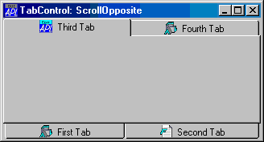

| Applies To: | TabControl |
Description
The ScrollOpposite property specifies that unneeded tabs scroll to the opposite side of a TabControl, when a tab is selected.
ScrollOpposite is a single number with the value 0 (normal scrolling) or 1 (scrolling to the opposite side); the default is 0.
The picture below illustrates a TabControl with ScrollOpposite set to 1, after the user has clicked Third Tab.

Setting ScrollOpposite to 1 implies that MultiLine is also 1. If you set ScrollOpposite to 1 in a ⎕WC statement, the MultiLine property will automatically be set to 1, even if you try to set MultiLine to 0 in the same statement. If you subsequently change MultiLine back to 0 using ⎕WS , this will work, but the effect is not useful and it is not supported.